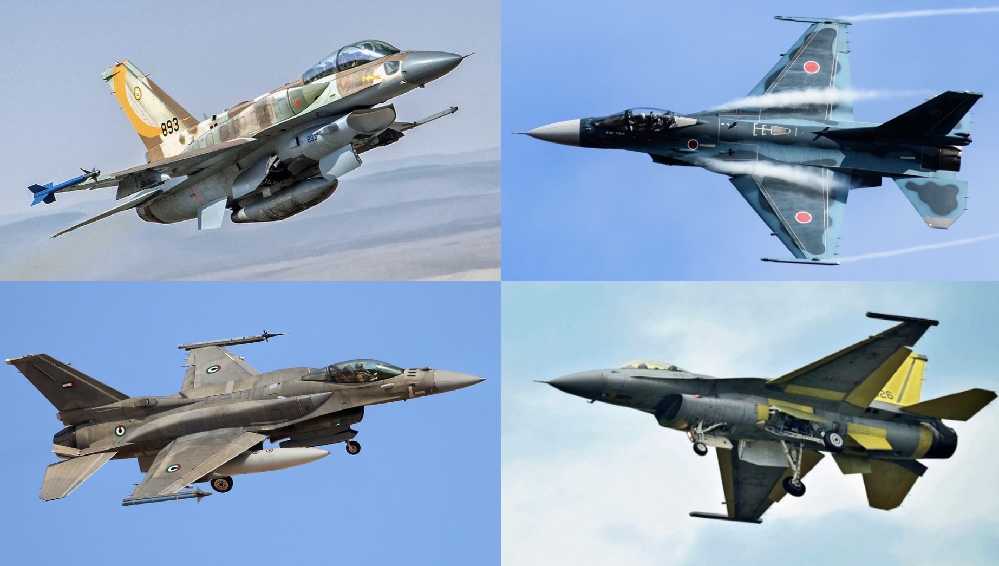

F-16 Variants & Upgrades
Jump to a section: Major Variants | Export Variants | F-16V Viper
The F-16 has undergone continuous development since its first flight, with each generation of upgrades introducing new avionics, weapons systems, and structural improvements that have dramatically expanded its capabilities. The aircraft’s adaptable design has allowed it to absorb technologies that did not exist when it was conceived, transforming a day-fighter originally designed to win dogfights into a sophisticated all-weather, multirole platform that can strike targets with precision-guided munitions in any weather, day or night.

F-16s from multiple nations — each country has often customised the aircraft to its own requirements.
Major USAF Production Variants
- F-16A / F-16B (Blocks 1, 5, 10, 15, 20)
- The original production variants. The F-16A is the single-seat combat aircraft; the F-16B is the two-seat operational trainer with a slightly reduced fuel load to accommodate the second cockpit. Early Block 1 and Block 5 aircraft were equipped with the APG-66 pulse-Doppler radar and were primarily optimised for visual-range air combat. Block 15 introduced larger horizontal tail surfaces and was the most produced F-16A/B variant. Block 20 was a modernised A/B standard produced specifically for Taiwan, with F-16C/D-level avionics in the A/B airframe.
- F-16C / F-16D (Blocks 25, 30, 32, 40, 42, 50, 52)
- Introduced in 1984, the F-16C/D represented a major upgrade over the A/B. Block 25 introduced the more capable APG-68 radar, an improved cockpit with a wide-angle HUD, and provisions for the AIM-120 AMRAAM beyond-visual-range missile. Block 40/42 (“Night Falcons”) added the LANTIRN targeting pod system for all-weather, day/night precision attack. Block 50/52 introduced the HARM Targeting System (HTS) for suppression of enemy air defences, giving the F-16 the ability to autonomously detect, locate, and target enemy radar systems.
- F-16 Block 60 (F-16E/F Desert Falcon)
- Developed specifically for the United Arab Emirates, the Block 60 is the most capable variant produced to date at its time of introduction. It features conformal fuel tanks (CFTs) integrated into the fuselage that increase internal fuel by 3,000 lb without adding drag, an internal FLIR (Forward Looking Infra-Red) and targeting system, and the advanced APG-80 AESA radar. The UAE paid for development of the Block 60, retaining the designation F-16E/F. The USAF did not adopt this variant but the technologies it pioneered later appeared in the F-16V.
Notable Export Variants
Many export customers have specified unique configurations or had their aircraft customised to national requirements. Some of the most notable export variants include:
- F-16I Sufa (Israel) – Israel’s most advanced F-16 variant, based on the Block 52 but heavily modified with Israeli avionics, conformal fuel tanks, and weapons systems. Sufa means “storm” in Hebrew. The Israeli Air Force maintains a policy of local modification that makes its F-16I significantly different from standard export aircraft.
- F-16AM/BM (EPAF Upgrade) – The mid-life upgrade applied to the F-16A/B aircraft of Belgium, the Netherlands, Denmark, and Norway. The upgrade brought the aircraft to near-Block 50 avionics standard, including the APG-66(V)2 radar and compatibility with the AIM-120 AMRAAM missile.
- F-16 Fighting Falcon Block 70/72 (formerly F-16V) – The current production standard for new-build aircraft offered to international customers. Features the APG-83 SABR AESA radar, an advanced cockpit with large-area displays, automatic ground collision avoidance system (AGCAS), and Northrop Grumman’s JHMCS II helmet-mounted display.
- F-21 (India) – Lockheed Martin’s dedicated offer for India’s fighter competition. Based on the F-16 Block 70 but with additional modifications including an additional avionics bay, spine dorsal avionics, and provisions for Indian weapons and systems. Lockheed proposed manufacturing the F-21 in India under the “Make in India” defence initiative.
- F-16V Retrofit Package – For existing operators who wish to upgrade their current aircraft to Viper standard rather than purchasing new-build aircraft. Taiwan, Singapore, Bahrain, and Greece have all committed to upgrading portions of their fleets to the F-16V standard.
F-16 Variant Comparison Summary
| Variant | Introduced | Radar | Primary Role |
|---|---|---|---|
| F-16A/B Block 1–10 | 1978 | APG-66 | Day air superiority |
| F-16A/B Block 15 | 1981 | APG-66 | Air superiority / light strike |
| F-16C/D Block 25 | 1984 | APG-68 | Multirole (BVR capable) |
| F-16C/D Block 40/42 | 1988 | APG-68(V)1 | All-weather precision strike (LANTIRN) |
| F-16C/D Block 50/52 | 1991 | APG-68(V)5 | Multirole + SEAD (Wild Weasel) |
| F-16E/F Block 60 | 2003 | APG-80 (AESA) | Advanced multirole (UAE only) |
| F-16V Block 70/72 | 2015 | APG-83 SABR (AESA) | Advanced multirole (current production) |
← Back to Home